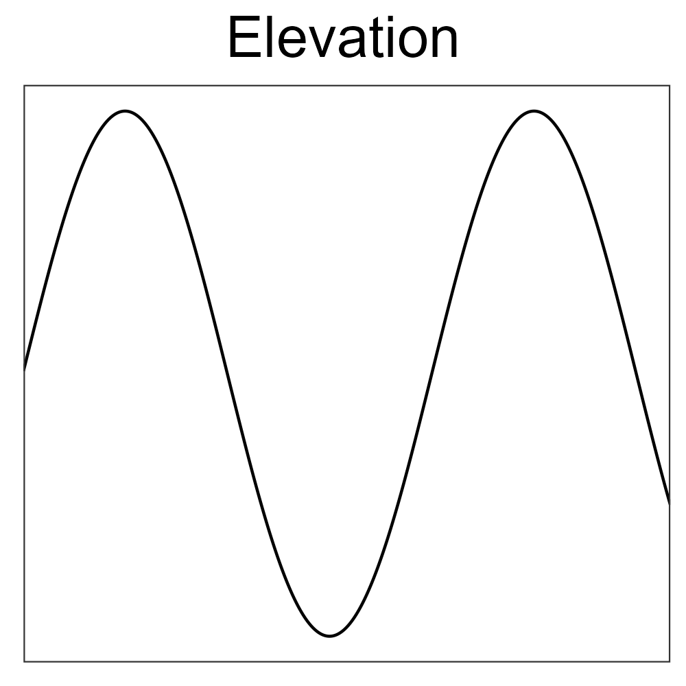

Designing and Documenting Models:
The ODD
Protocol
EES 4760/5760
Agent-Based and Individual-Based Computational Modeling
Jonathan Gilligan
Class #4: Monday, September 02 2024
Housekeeping at Start of Class:
Announcements
- Homework for Wednesday:
- You will be turning in several files:
- One or more NetLogo models for each exercise
- Text files with answers to questions about the models
- If you prefer to do your homework with pen and paper, snap a photo (preferably .jpg or .png format) and upload that.
- Preferred method:
- Make a single Zip file containing all the files you are turning in and turn the Zip file into Brightspace
- Alternate method:
- Upload all of the files you are turning in to Brightspace individually
- You will be turning in several files:
Getting Started:
- Purpose of Today’s Class:
- Learn a structure for designing and documenting a model
- Getting started for today:
- Download and save the Butterfly model from https://ees4760.jgilligan.org/models/class_04/butterfly_odd.nlogo
- Or go to the “Downloads” page at https://ees4760.jgilligan.org and click on item 4: “Butterfly Model ODD”
- Open NetLogo and load “butterfly_odd.nlogo”
- Download and save the Butterfly model from https://ees4760.jgilligan.org/models/class_04/butterfly_odd.nlogo
Designing and Documenting Models
Designing and Documenting Models

Design
- Don’t start writing code until you know what you’re trying to do.
- Big picture
- What is the purpose of your model?
- What things does your model use?
- How do those things behave?
- Design concepts
- How do you represent the things in your model?
- How do you implement their behavior?
- How will your things and behaviors realize your purpose?
- What data will you collect from your model?
- How will you use that data to achieve your purpose?
Overview, Design Concepts, and Details

General

Detailed
ODD in perspective:
- Write overview and major parts of design concepts first
- As you write the model code, revisit and revise design concepts.
- Much of the details will emerge in the course of programming.
- When you are finished, write a complete ODD. This will be the major documentation for your model.
ODD Outline
1. Purpose & Patterns
Questions:
- What is the purpose of the model?
- What are you trying to do?
- Suggestion: What will the key figure showing your results look like?
- Patterns: What aspects of the world are we
modeling?
- How will you judge whether the model is realistic enough for the purpose?
- What can you neglect?
2. Entities, State Variables, Scale
- What kinds of entities are in the model?
Agents, collectives, spatial units, global environment, … - What attributes (state-variables) characterize the
entities?
Age, sex, wealth, mood, opinion, soil type, land costs, rainfall, market price, …- You only need state-variables if they vary
- values are different for different entities, change over time, etc.
- Use the fewest attributes you need
- You only need state-variables if they vary
- What are the temporal and spatial resolutions and extents of the
model?
- Resolution: how detailed?
- Extents: how big?
3. Process Overview and Scheduling
- How do states change?
- What entities do what, and in what order?
- Schedule:
- Which entities take actions?
- What actions do they take?
- Details of actions often go in submodels
- In what order do they take them?
- Design Concepts
- Schedule:
4. Design Concepts
There are 11 design concepts (see Table 3.1).
Textbook has one chapter for each.
Outline of Design Concepts
Basic Principles: Basis of model in general concepts and theories
Emergence: What emerges as the model runs?
(phenomena not imposed or directly programmed)-
Adaptation How do agents respond to changes in their environment?
What decisions do they make, and how do they decide?
Do they seek objectives directly (deliberately) or indirectly (mimic natural behavior)?Note: Adaptation means responding to current conditions. It’s different from persistent change (the way the word is used in evolution)
Seek shelter when it starts to rain.
Objectives (Fitness): Goals of agents? What determines survival?
Do objectives change as agent changes?-
Learning: How do individuals change behavior as they gain experience?
Note: This is where persistent change happens. It’s often confused with adaptation
After getting rained on several times, start carrying an umbrella when it’s cloudy.
Outline of Design Concepts (cont.)
-
Prediction: How do agents predict consequences of
their decisions?
(learning, memory, environmental cues, programmed assumptions) - Sensing: What do agents know or perceive when
making decisions?
(Is sensing process itself explicitly modeled, or do they just know?) - Interaction: What forms of interaction among agents are there?
- Stochasticity: Is there randomness in model? Randomness must be justified!
- Collectives: Grouping of individuals (Herds, social networks, …)
- Observation: How do scientists collect data from the model for analysis?
Details
5. Initialization
- What is the initial state of the model world?
- Time \(t = 0\) of a simulation run
- In detail:
- How many entities, of what type, are there initially?
- What are the exact values of their state variables?
(Or how were they set at random?) - Is initialization always the same,
or does it vary from one simulation run to the next? - Are initial values chosen arbitrarily, or based on data?
- References to those data should be provided.
6. Input data
- Does the model use input from external sources to represent
processes that change over time?
- data files, other models, human interaction
- If so, what data?
- Where did they come from?
- Provide references, citations.
7. Submodels
If the process scheduling step contains a list of
processes or actions,
explain, in detail what
submodels represent those processes or actions.
- What are the model parameters?
- How were the submodels designed or chosen?
- How were they tested?
Example:
Virtual Corridors for
Conservation
Management
Example: Virtual Corridors for Conservation Management

Pe’er, G., D. Saltz, & K. Frank, “Virtual corridors for conservation management,” Conservation Biology 19, 1997 (2005).
Butterfly Model in NetLogo
Open NetLogo and load “butterfly_odd.nlogo”
- Code section is blank, but ODD is filled in on “Info” tab.
- You will fill in the code based on ODD while reading Chapter 4
- Click on “Edit” (pencil icon) to see what Info tab looks like when
you edit it.
- For details on editing “Info” tab, open NetLogo User Guide from the NetLogo Help menu and go to “Info Tab Guide” in the “Reference Section”
Purpose
Ecologists observe that as butterflies move uphill, they concentrate into narrow and well-definied virtual corridors rather than following any old path to the top of the hill.
-
Explore the concept of virtual corridors:
Can concentrations of migrating animals emerge spontaneously from movement behavior and topography, instead of being a special habitat?
-
Specifically, How does the concentration of hill-topping butterflies emerge from:
- The way butterflies move uphill
- The topography of the landscape
Entities, State Variables, and Scales
-
Landscape:,
- Square grid cells (patches) with one state variable: elevation.
-
Butterflies:
- Have one state variable: location
(discrete: which cell they’re in)
- Have one state variable: location
Entities, State Variables, and Scales
-
Spatial Scale:
- 150 × 150 cells (patches)
- Two modes:
- Generic mode: No specific size for a patch
- Mapping mode: Each patch corresponds to 25 × 25 meters in the real landscape
- Time Scale:
- Simulations last 1000 ticks
- Tick length is unspecified (time for a butterfly to move one cell).
Process Overview and Scheduling
-
Only one process: butterfly movement
- On each tick, each butterfly moves once
- The order in which butterflies move is not important because they don’t interact
Design concepts (important ones)
- Basic Principles: The concept of virtual corridors
-
Emergence: results (concentration of butterflies in
corridors)
emerge from movement rule and topography - Sensing: Butterflies can sense elevation in current and 8 surrounding patches
- Interaction: None
- Stochasticity: Used to represent reasons why butterflies do not move straight uphill
- Observation: We need a way to measure of butterfly concentration
Initialization
- Landscape: cell elevations set to a flat landscape with four hills
- Butterflies: 500 are created and placed in one patch

Submodel: Butterfly movement
- Global parameter q is probability that butterfly moves
straight uphill,
vs. moving to random neighbor cell.
Next Steps
Next Steps
For Wednesday, you will follow the book and write code to implement the butterfly model.
More about Agent-Based Models
Agent-based models
- Agents/Individuals are discrete, unique, and autonomous entities.
- Discrete entities: Important at low densities
- Unique: Individuals, even of same age and species, can be different
- Individuals have a life history
- Interactions among individuals are usually local, not global
- Individuals make decisions, which can be adaptive
- Ecology or society emerges from individual behavior (bottom-up)
Example: flocks of starlings
- Thousands of individuals
- unique and different
- interact locally
- show adaptive behavior

Starling murmuration
By Liberty Smith & Sophie Windsor Clive, Islands and Rivers, https://vimeo.com/31158841
Flock of thousands of starlings
Simulated flock of thousands of starlings
Simulated flock of thousands of starlings
Why agent-based models?
- Individuals/agents are unique and different from one another
- Individuals/agents interact locally
- Individuals/agents show adaptive behavior
Adaptive behavior

Adaptive behavior:
Characteristic patterns in
trout habitat selection

Adaptive behavior:
Characteristic patterns in
trout habitat selection
- Habitat:
- Use shallow habitat when small
- Avoid aquatic predators
- Use deep habitat when big
- Avoid terrestrial predators
- Shift when predators, larger competitors are introduced
- Use shallow habitat when small
- Hierarchical feeding: big fish get the best spots
- Move to margins during floods
- Seek slower, quieter habitat when water is turbid
- Seek slower flow when water is cold
Source: S.F. Railsback & B.C. Harvey. 2002. Ecology 83, 1817–1830. doi: 10.1890/0012-9658(2002)083[1817:AOHSRU]2.0.CO;2
Catching up
Catching up from Wednesday
- Two pieces of NetLogo I didn’t get to.
- Controls (slider)
- Monitoring (graphs)
- Download the model from Wednesday: https://ees4760.jgilligan.org/static/model/class_03/class_03_example.nlogo or go to the Downloads page of the course web site.
Interacting with a Model
On the “interface” tab:
-
Right click and add a Slider
- Type “sugar-growth” into “Global Variable”
- Set minimum to 0, increment to 0.005, maximum to 0.1, and value to 0.050
-
Open the code tab and comment out definition and initialization of
sugar-growthglobals [ max-sugar ; sugar-growth ] ... to setup clear-all ; set sugar-growth 0.050 ...
Monitoring a Model
On the “interface” tab:
- Right click and add a Plot
- Name the plot “Hunger”
- Set X max to 10 and Y max to 100
- Type “Hunger” for “X axis label” and
“# Turtles” for “Y axis label” - Click on the pencil icon next to
“default” pen- Choose “Bar” for “Mode”
- In “Pen update commands” type
histogram [hunger] of turtles
- Press “OK”
Play with the model
- Do interesting things happen for different values of
sugar-growth? - It might be fun to comment out the line in
to gothat stops the model after 2000 ticks
; if ticks > 2000 [ stop ]